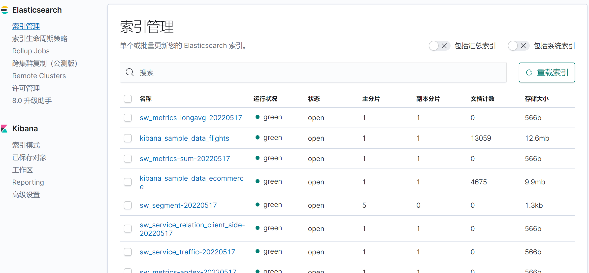
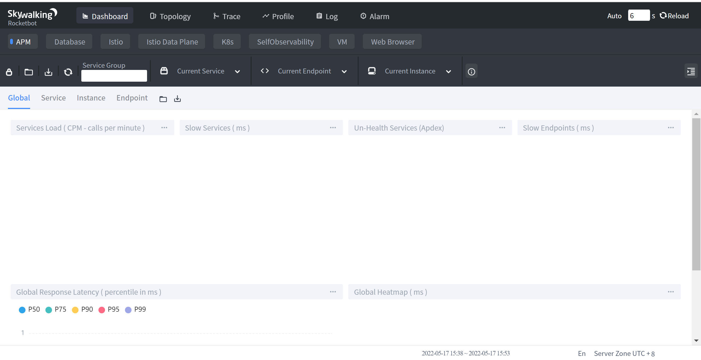
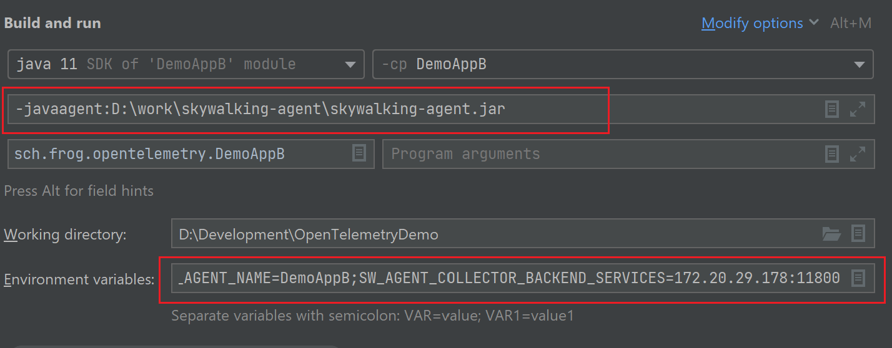
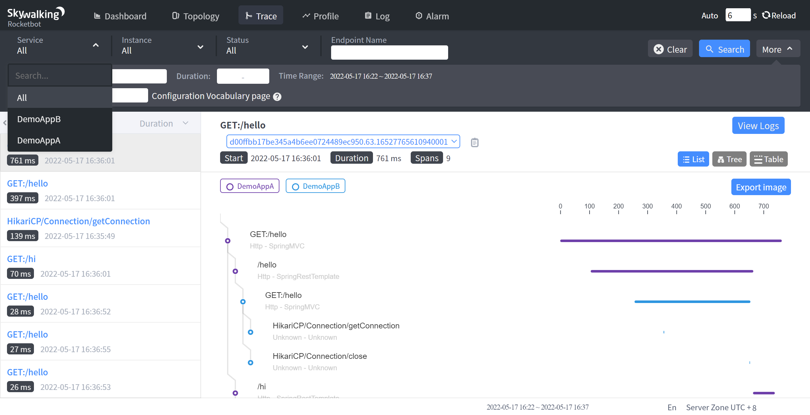
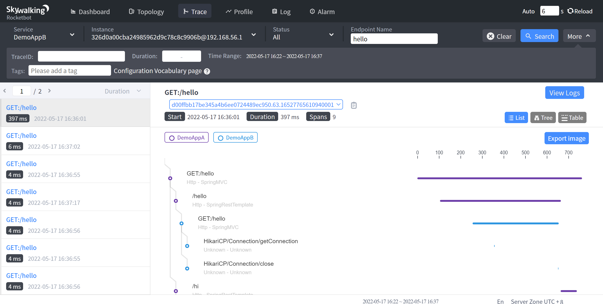
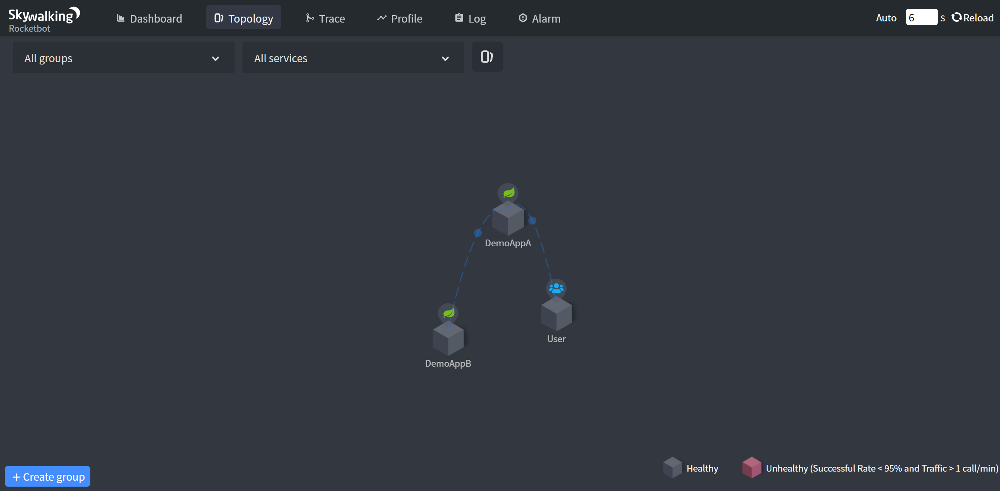
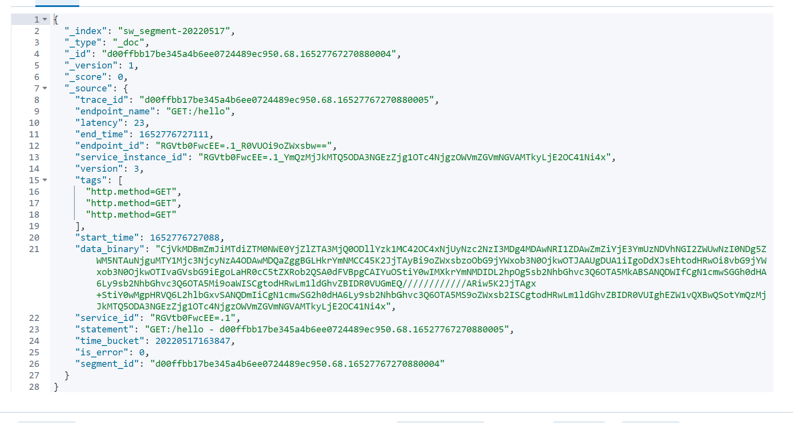
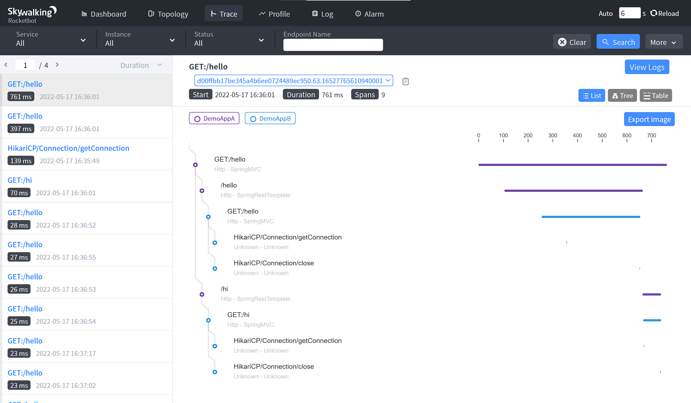
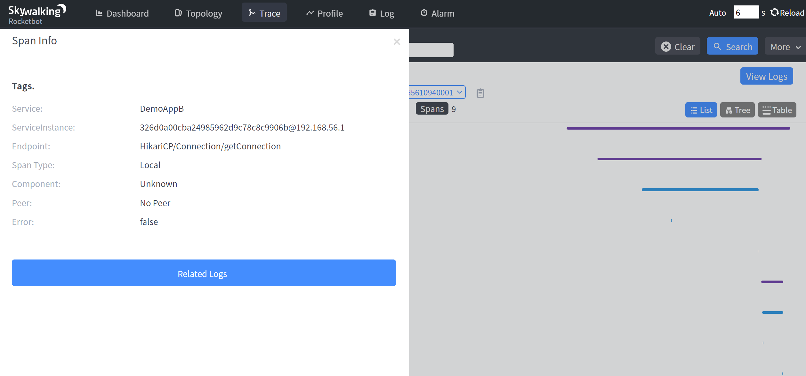

分布式系统的应用程序性能监视工具，专为微服务、云原生架构和基于容器（Docker、K8s、Mesos）架构而设计。
本文基于Skywalking8.5.0, 存储为ElasticSearch7.
config/application.yml, 主要修改存储类型即可, 默认是H2. 由于我是本地启动, es端口没有变化, 所以其余都不需要改变.storage:
selector: elasticsearch7
elasticsearch7:
nameSpace: ${SW_NAMESPACE:""}
clusterNodes: ${SW_STORAGE_ES_CLUSTER_NODES:localhost:9200}
protocol: ${SW_STORAGE_ES_HTTP_PROTOCOL:"http"}
trustStorePath: ${SW_STORAGE_ES_SSL_JKS_PATH:""}
trustStorePass: ${SW_STORAGE_ES_SSL_JKS_PASS:""}
dayStep: ${SW_STORAGE_DAY_STEP:1} # Represent the number of days in the one minute/hour/day index.
indexShardsNumber: ${SW_STORAGE_ES_INDEX_SHARDS_NUMBER:1} # Shard number of new indexes
indexReplicasNumber: ${SW_STORAGE_ES_INDEX_REPLICAS_NUMBER:1} # Replicas number of new indexes
# Super data set has been defined in the codes, such as trace segments.The following 3 config would be improve es performance when storage super size data in es.
superDatasetDayStep: ${SW_SUPERDATASET_STORAGE_DAY_STEP:-1} # Represent the number of days in the super size dataset record index, the default value is the same as dayStep when the value is less than 0
superDatasetIndexShardsFactor: ${SW_STORAGE_ES_SUPER_DATASET_INDEX_SHARDS_FACTOR:5} # This factor provides more shards for the super data set, shards number = indexShardsNumber * superDatasetIndexShardsFactor. Also, this factor effects Zipkin and Jaeger traces.
superDatasetIndexReplicasNumber: ${SW_STORAGE_ES_SUPER_DATASET_INDEX_REPLICAS_NUMBER:0} # Represent the replicas number in the super size dataset record index, the default value is 0.
user: ${SW_ES_USER:""}
password: ${SW_ES_PASSWORD:""}
secretsManagementFile: ${SW_ES_SECRETS_MANAGEMENT_FILE:""} # Secrets management file in the properties format includes the username, password, which are managed by 3rd party tool.
bulkActions: ${SW_STORAGE_ES_BULK_ACTIONS:1000} # Execute the async bulk record data every ${SW_STORAGE_ES_BULK_ACTIONS} requests
flushInterval: ${SW_STORAGE_ES_FLUSH_INTERVAL:10} # flush the bulk every 10 seconds whatever the number of requests
concurrentRequests: ${SW_STORAGE_ES_CONCURRENT_REQUESTS:2} # the number of concurrent requests
resultWindowMaxSize: ${SW_STORAGE_ES_QUERY_MAX_WINDOW_SIZE:10000}
metadataQueryMaxSize: ${SW_STORAGE_ES_QUERY_MAX_SIZE:5000}
segmentQueryMaxSize: ${SW_STORAGE_ES_QUERY_SEGMENT_SIZE:200}
profileTaskQueryMaxSize: ${SW_STORAGE_ES_QUERY_PROFILE_TASK_SIZE:200}
oapAnalyzer: ${SW_STORAGE_ES_OAP_ANALYZER:"{\"analyzer\":{\"oap_analyzer\":{\"type\":\"stop\"}}}"} # the oap analyzer.
oapLogAnalyzer: ${SW_STORAGE_ES_OAP_LOG_ANALYZER:"{\"analyzer\":{\"oap_log_analyzer\":{\"type\":\"standard\"}}}"}
./bin/oapService.sh
webapp/webapp.yml, 这里我把端口号修改了一下:server:
port: 8094
collector:
path: /graphql
ribbon:
ReadTimeout: 10000
# Point to all backend's restHost:restPort, split by ,
listOfServers: 127.0.0.1:12800
此外, 上面配置中的collector.ribbon.listOfServers配置的是BackEnd的地址和端口.
./bin/webappService.sh, 完成skywalking启动.
skywalking-agent\config\agent.config, 修改配置的方式有很多种, 因为接下来, 我要两个应用共用同一个探针, 这里就不修改配置了, 直接在启动命令中, 增加一些配置.

如图, 是trace数据的界面.

我们可以看到几个关键要素:
如图, 是拓扑图界面:

接下来, 简单分析一下SkyWalking上传数据的协议. 看一下它是如何完成链路追踪的.
skywalking协议文件在这里: skywalking-data-collect-protocol
我们只关注其中的trace协议, 即这个路径: /language-agent/Tracing.proto
首先, 从ElasticSearch中, 可以找到原始数据, sw_segment*中, 有这样的数据:

这里面data_binary字段里面就是原始数据, 只不过是protobuf格式, 并且又转了一次base64. 我们可以通过写程序, 给转成json.
我写了个程序, 在这里: skywalking-demo
接下来, 分析一下一条完整的trace.
首先, 上面的安装探针的共有两个应用, 分别是: DemoAppA, DemoAppB, 请求A的hello接口后, A也会调用B应用, 而且是调用两次, 这个从上面的拓扑图中可以看出确实有调用关系. 从下面的图中, 也可以看到, 确实调用了两次.(线路颜色的变化)

于是, 从es中获取到了三条数据(data_binary转json之后):
{
"traceId": "d00ffbb17be345a4b6ee0724489ec950.63.16527765610940001",
"traceSegmentId": "d00ffbb17be345a4b6ee0724489ec950.63.16527765610940000",
"spans": [{
"spanId": 1,
"startTime": "1652776561200",
"endTime": "1652776561758",
"operationName": "/hello",
"peer": "localhost:9092",
"spanType": "Exit",
"spanLayer": "Http",
"componentId": 13,
"tags": [{
"key": "url",
"value": "http://localhost:9092/hello"
}, {
"key": "http.method",
"value": "GET"
}]
}, {
"spanId": 2,
"startTime": "1652776561759",
"endTime": "1652776561832",
"operationName": "/hi",
"peer": "localhost:9092",
"spanType": "Exit",
"spanLayer": "Http",
"componentId": 13,
"tags": [{
"key": "url",
"value": "http://localhost:9092/hi"
}, {
"key": "http.method",
"value": "GET"
}]
}, {
"parentSpanId": -1,
"startTime": "1652776561095",
"endTime": "1652776561856",
"operationName": "GET:/hello",
"spanLayer": "Http",
"componentId": 14,
"tags": [{
"key": "url",
"value": "http://localhost:9091/hello"
}, {
"key": "http.method",
"value": "GET"
}]
}],
"service": "DemoAppA",
"serviceInstance": "bd322d1498074a3f859786839efdef4e@192.168.56.1"
}
{
"traceId": "d00ffbb17be345a4b6ee0724489ec950.63.16527765610940001",
"traceSegmentId": "2ce2eff1dff1413f84b9c296f7e401aa.65.16527765613500000",
"spans": [{
"spanId": 1,
"startTime": "1652776561451",
"endTime": "1652776561451",
"operationName": "HikariCP/Connection/getConnection",
"spanType": "Local",
"componentId": 116
}, {
"spanId": 2,
"startTime": "1652776561747",
"endTime": "1652776561747",
"operationName": "HikariCP/Connection/close",
"spanType": "Local",
"componentId": 116
}, {
"parentSpanId": -1,
"startTime": "1652776561351",
"endTime": "1652776561748",
"refs": [{
"traceId": "d00ffbb17be345a4b6ee0724489ec950.63.16527765610940001",
"parentTraceSegmentId": "d00ffbb17be345a4b6ee0724489ec950.63.16527765610940000",
"parentSpanId": 1,
"parentService": "DemoAppA",
"parentServiceInstance": "bd322d1498074a3f859786839efdef4e@192.168.56.1",
"parentEndpoint": "GET:/hello",
"networkAddressUsedAtPeer": "localhost:9092"
}],
"operationName": "GET:/hello",
"spanLayer": "Http",
"componentId": 14,
"tags": [{
"key": "url",
"value": "http://localhost:9092/hello"
}, {
"key": "http.method",
"value": "GET"
}]
}],
"service": "DemoAppB",
"serviceInstance": "326d0a00cba24985962d9c78c8c9906b@192.168.56.1"
}
{
"traceId": "d00ffbb17be345a4b6ee0724489ec950.63.16527765610940001",
"traceSegmentId": "2ce2eff1dff1413f84b9c296f7e401aa.66.16527765617620000",
"spans": [{
"spanId": 1,
"startTime": "1652776561764",
"endTime": "1652776561764",
"operationName": "HikariCP/Connection/getConnection",
"spanType": "Local",
"componentId": 116
}, {
"spanId": 2,
"startTime": "1652776561831",
"endTime": "1652776561831",
"operationName": "HikariCP/Connection/close",
"spanType": "Local",
"componentId": 116
}, {
"parentSpanId": -1,
"startTime": "1652776561762",
"endTime": "1652776561832",
"refs": [{
"traceId": "d00ffbb17be345a4b6ee0724489ec950.63.16527765610940001",
"parentTraceSegmentId": "d00ffbb17be345a4b6ee0724489ec950.63.16527765610940000",
"parentSpanId": 2,
"parentService": "DemoAppA",
"parentServiceInstance": "bd322d1498074a3f859786839efdef4e@192.168.56.1",
"parentEndpoint": "GET:/hello",
"networkAddressUsedAtPeer": "localhost:9092"
}],
"operationName": "GET:/hi",
"spanLayer": "Http",
"componentId": 14,
"tags": [{
"key": "url",
"value": "http://localhost:9092/hi"
}, {
"key": "http.method",
"value": "GET"
}]
}],
"service": "DemoAppB",
"serviceInstance": "326d0a00cba24985962d9c78c8c9906b@192.168.56.1"
}
关于链路追踪的具体原理, 就不过多解释了, skywalking和OpenTelemetry等原理都是一样的, 可以看 这里, 下面对主要字段做一个简要的介绍:

其余字段就不介绍了.